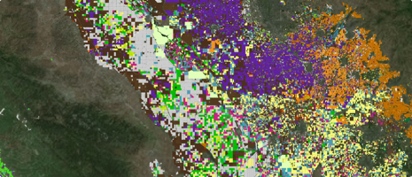
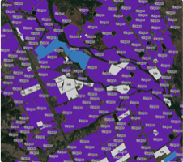

Mapping the bread basket of California
California’s Central Valley is an agricultural powerhouse, with over 230 crops producing 8% of America’s agricultural output. This map illustrates the incredible diversity of the region’s agriculture through the seasons, using a large public data set and XYZ Hub API features such as styling with tags, search with properties and dynamically filtering tags within the viewport.
Source files and data can be accessed on GitHub.

This map was designed and built by Stamen Design with publicly available data.